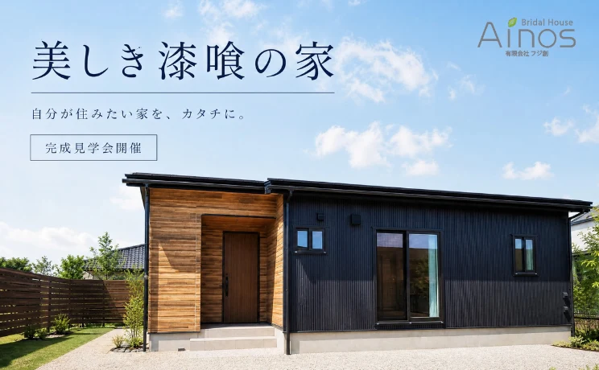

イベント情報
富山市・自然素材の平屋
完成見学会
詳しいご案内 
日程・価格・募集内容などは、掲載当時の情報です。
富山市・自然素材の平屋
美しき漆喰の家。
その心地よさを、現地で。
開催のご案内
- 開催日・時間
- 8月8日〜
09:00〜18:00 - 会場
- 富山県富山市
ご予約後に詳細案内 - 参加費
- 無料
- ご参加方法
- 完全予約制
掲載当時の開催情報です。現在の見学可否・日程はお問い合わせください。
見学について問い合わせる
見学で確かめたいこと
素材の心地よさ。
暮らしを守る性能。
全面漆喰仕上げ
調湿・消臭・抗菌に優れた漆喰を、天井から壁まで全面に使用。一年を通して呼吸するような快適な室内環境をつくります。
無垢杉フローリング
素足で歩くとひんやりせず、やわらかい。お子様が転んでも安心な、木の温もりが残るフローリングです。
耐震等級3相当
最高等級の耐震性能に加え、高気密・高断熱設計。富山の気候と大切な家族を、内側からしっかり守ります。
ご来場からご相談まで
当日の流れ
お迎え
スタッフがご自宅まで直接お迎えにあがります。道順の心配は不要です。
受付
会場に到着後、受付をお済ませください。手袋・スリッパをご用意しております。
自由見学
漆喰の壁、無垢材の香りをじっくりご体感ください。写真撮影も可能です。
スタッフ説明
素材・間取り・仕様について、スタッフが詳しくご説明します。
個別相談（任意）
資金計画や土地探しなど、何でもお気軽にご相談ください。
ご都合が合わない方へ
ご自宅から、
オンラインで見学。
スマートフォン一台でご参加いただける、Zoomオンライン見学会もご用意しています。スタッフが各部屋をリアルタイムでご案内しますので、その場で質問も可能です。
- スマホでOK
- 特別な準備は不要です
- 日時自由
- ご希望の時間で調整
- 移動時間がかからず、隙間時間で参加可能
- 遠方の方や、小さなお子様がいるご家庭に最適
- 気になる部分をカメラでズームアップして確認
ご来場にあたってのお願い
- 完全予約制です。事前にお電話・フォーム・LINEよりご予約ください。
- スタッフがお迎えにあがりますので、道順のご心配は不要です。
- お施主様のお住まいのため、室内の取り扱いにご配慮をお願いいたします。
- 小さなお子様連れでも安心です。キッズスペースをご用意しています。
現地・オンラインともに見学は無料です。
LINEで相談する